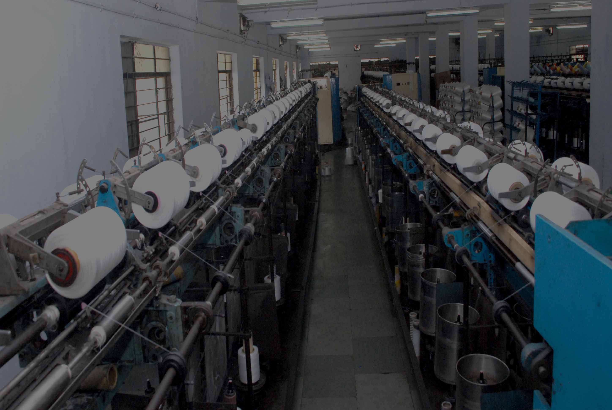

Daman Polythread Ltd. is a front runner in the manufacturing of HIGH TENACITY (HT) POLYPROPYLENE MULTIFILAMENT YARN and NARROW WOVEN FABRICS / WEBBINGS. Utilizing state of the art European Technology and machinery along with superior manufacturing capabilities enables us to cater to multiple requirements of international and domestic clients.
Daman Polythread Ltd. is an industrial corporation that has a lot of firsts to its name. In the year 2000 it was the first company in India to manufacture real HIGH TENACITY POLYPROPYLENE MULTIFILAMENT YARN using the advanced European machinery and technology.
Within a few years we started manufacturing NARROW WOVEN FABRICS / WEBBINGS and various value added products under different brand names. Managed by professionals with tons of experience in the industry gives us an edge over others. All sales operations are carried out from our head office located in one of the world's busiest metropolises, Mumbai.
Daman Polythread Ltd. continues to focus on expanding, developing and exceeding the expectations of its customers in technology, quality and service.